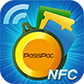

Passpac
NFC for SmartPhone
Mobile APP
Introduction PassPacAPP features, and context of use.

PassPac - Pass Management
By QZ Tap, Inc.
Passbook is an iOS6.X native application, it is turns our daily membership cards, paper-based tickets, coupons, into the electronic format; Passbook categorized the various types of ticket into five groups: membership cards, stored value cards, event tickets, Universal tickets and e-tickets/coupons.
PassPac 的登入介面，採用Facebook帳號認證登入。
- 當使用者登入後, PassPac的預設選項為(使用Pass), 當選擇Pass Type及touch畫面後，功能表即予以收合。
- 功能表收合後，即進入到Pass使用及呈現頁面
- 單張之Pass呈現畫面，由拖曳滑動來瀏覽其餘張Pass。
- Used / Expired 是因passbook的而由消費者來做刪除，而PassPac是可以自動刪除。
- 左下方的箭頭為APP選單功能表，當點選後功能表會做收合及展開的動作，此為展開之情況。
- 此圖為功能展開之情況，分為【設定】 與【PassMarket】兩個選項。
- 當用戶點選任一功能之後，功能表即進入此一收合之預設狀態。
- 在點選【Pass Market】後出現Pass列表，共分最新/熱門/限量/搜尋 四個選項選項,呈現於畫面上讓使用者操作。
- 其中選單之數字,表示還有其Pass的張數,點選選單後隨即展開,其餘項目則是向上或向下收合。
- 點選選單內之說明時,出現完成的說明及出現Add to Passbook的選項。
- 有分為【My Account】及【PassPac】兩種設定。
- 【My Account】選項分為三部分：
- 【More Adaper】：此為一個臉書之帳戶有多個Adaper
- 【Location】：讓使用者選擇想要搜尋Pass的預設地點
- 【Notification】：使用Apple的APNS的確認使用者開啟此一功能
- 【PassPac】選項則分為四個部分：
- 【About PassPac】：關於軟體版權說明
- 【Terms of Use】：PassPac使用條款說明
- 【Privacy Policy】：PassPac 隱私權政策說明
- 【Leave Feeback】：軟體問題回報及建議